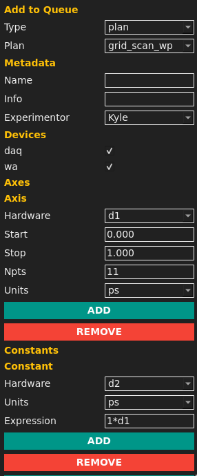
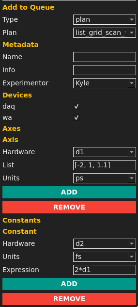

Bluesky in the Wright Group
Kyle Sunden*
Blaise Thompson
about us
University of Wisconsin - Madison Chemistry department
frequency domain nonlinear laser spectroscopy
Our lab has 4 experimental laser tables ("beamlines")
yaq
"yet another acquisition"
yaq.fyian instrument hardware control framework:
- modular
- extensible
- simple
- self describing
yaqc-bluesky
Interface layer for the bluesky device protocol
NOT Ophyd based
repowright plans
- unit awareness
- constant expressions
- specialized tuning methods
repo
grid_scan_wp
- main workhorse plan
- equivalent to SCAN from previous iterations

list_grid_scan_wp
- more flexible
- allows nonlinear stepping

Other Generic plans
- scan_wp
- list_scan_wp
Additionally each of the above has a relative version, which is specified as difference in position from the start of the plan.
Tuning methods
- motortune (generic)
- run_tune_test
- run_intensity
- run_setpoint
- run_holistic
bluesky in a box

tiled?
kafka instead of zmq-proxy?
gui queueserver client:
yaqc-cmds
queue

plot

bluesky widgets?
web client/httpclient?
repogui engineering client:
yaqc-qtpy
main control

position over time

specialized interfaces

Data Access
All of the data is recorded to a searchable database, however our tooling is not optimized for this usage, so we also output to wt5 files on disk.